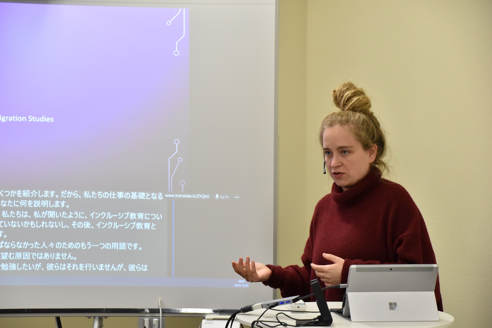
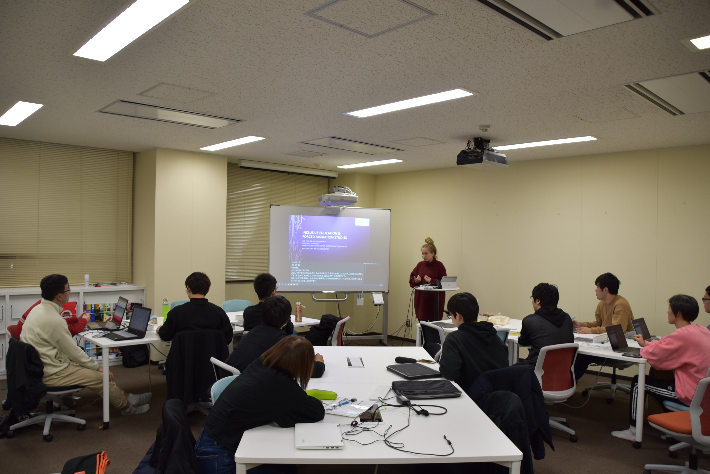

Lab News
Prof. Michelle Proyer, from the University of Vienna, gave a talk titled "Inclusion of People Affected by Forced Migration in Austria - Focus on Teachers". The talk is given in English. Via machine translation(MT), Japanese students can also undertand and were able to ask questions.

Summary
Each year, there are a lot of refugess imigrated to Austria with various origins and education backgrounds.Within this group, teachers also have imigrated. Prof. Proyer introduced us the certificate course basic of educational studies for displaced teacher so the qualifying former teachers can work in their profession. She found that there are various challenges including language and culture related issues, for example, translingual teaching approach, and monolingual and monocultural prospective
